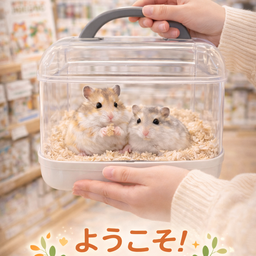

お迎え前に知っておきたいこと
「夜間回し車の音がすることはありますが、私にとっては元気に生活している安心できる音です。」
生活音や食事、温度管理など、実際の暮らしを想像しながら選ぶことを大切にしています。
RECEIVE
対面説明を大切にしながら、ハムスターとの暮らしを具体的にイメージできるページです。気になる子が見つかったら、営業時間内いつでもご相談いただけます。
SPECIES
はむのくらしでは、性格や飼いやすさの違いを見比べながら選べるように7種類を紹介しています。

「夜間回し車の音がすることはありますが、私にとっては元気に生活している安心できる音です。」
生活音や食事、温度管理など、実際の暮らしを想像しながら選ぶことを大切にしています。